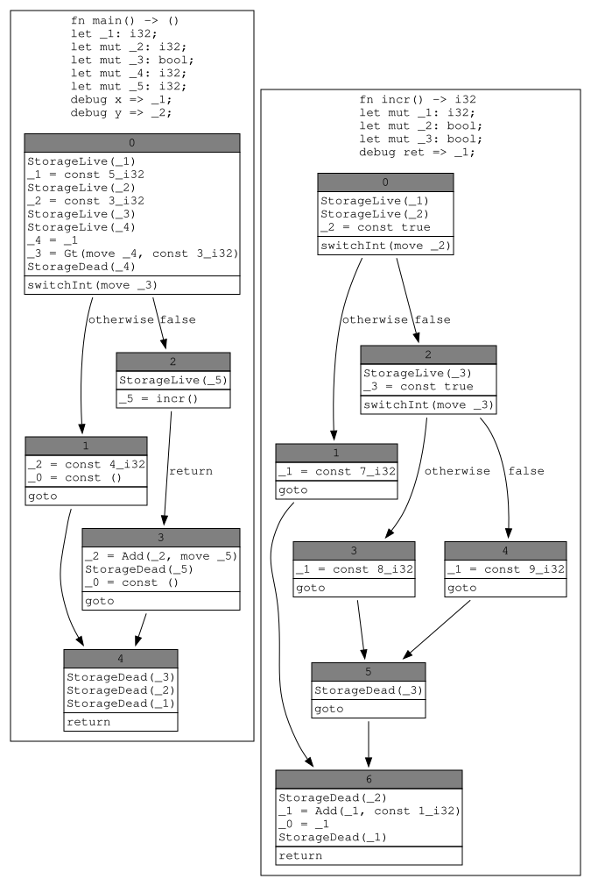

اشکالزدایی MIR
از پرچم -Z dump-mir میتوان برای تهیهی یک نمایش متنی از MIR استفاده کرد. پرچمهای اختیاری زیر، در ترکیب با -Z dump-mir، قالبهای خروجی بیشتری را فعال میکنند، از جمله:
-Z dump-mir-graphviz- یک فایل.dotتولید میکند که MIR را بهصورت گراف جریان کنترل نمایش میدهد-Z dump-mir-dataflow- یک فایل.dotتولید میکند که وضعیت جریان داده را در هر نقطه از گراف جریان کنترل نشان میدهد
-Z dump-mir=F گزینهی کاربردی کامپایلر است که به شما امکان میدهد MIR هر تابع را در هر مرحله از کامپایل ببینید. -Z dump-mir یک فیلتر F میگیرد که با آن میتوانید مشخص کنید به کدام توابع و کدام passها علاقهمندید. برای مثال:
> rustc -Z dump-mir=foo ...
این دستور MIR هر تابعی را که نامش شامل foo باشد تولید میکند؛ MIR هم پیش از هر pass و هم پس از آن dump میشود. این فایلها در پوشهی mir_dump ایجاد میشوند. احتمالاً تعداد آنها زیاد خواهد بود!
> cat > foo.rs
fn main() {
println!("Hello, world!");
}
^D
> rustc -Z dump-mir=main foo.rs
> ls mir_dump/* | wc -l
161
نام فایلها شبیه rustc.main.000-000.CleanEndRegions.after.mir است. این نامها از چند بخش تشکیل میشوند:
rustc.main.000-000.CleanEndRegions.after.mir
---- --- --- --------------- ----- either before or after
| | | name of the pass
| | index of dump within the pass (usually 0, but some passes dump intermediate states)
| index of the pass
def-path to the function etc being dumped
همچنین میتوانید فیلترهای دقیقتری بنویسید. برای مثال، main & CleanEndRegions مواردی را انتخاب میکند که هم به main و هم به pass با نام CleanEndRegions اشاره دارند:
> rustc -Z dump-mir='main & CleanEndRegions' foo.rs
> ls mir_dump
rustc.main.000-000.CleanEndRegions.after.mir rustc.main.000-000.CleanEndRegions.before.mir
فیلترها میتوانند بخشهایی با | هم داشته باشند تا چند مجموعه از فیلترهای & را ترکیب کنند. برای مثال main & CleanEndRegions | main & NoLandingPads یا main و CleanEndRegions را یا main و NoLandingPads را انتخاب میکند:
> rustc -Z dump-mir='main & CleanEndRegions | main & NoLandingPads' foo.rs
> ls mir_dump
rustc.main-promoted[0].002-000.NoLandingPads.after.mir
rustc.main-promoted[0].002-000.NoLandingPads.before.mir
rustc.main-promoted[0].002-006.NoLandingPads.after.mir
rustc.main-promoted[0].002-006.NoLandingPads.before.mir
rustc.main-promoted[1].002-000.NoLandingPads.after.mir
rustc.main-promoted[1].002-000.NoLandingPads.before.mir
rustc.main-promoted[1].002-006.NoLandingPads.after.mir
rustc.main-promoted[1].002-006.NoLandingPads.before.mir
rustc.main.000-000.CleanEndRegions.after.mir
rustc.main.000-000.CleanEndRegions.before.mir
rustc.main.002-000.NoLandingPads.after.mir
rustc.main.002-000.NoLandingPads.before.mir
rustc.main.002-006.NoLandingPads.after.mir
rustc.main.002-006.NoLandingPads.before.mir
(در اینجا فایلهای main-promoted[0] به MIR مربوط به «ثابتهای ارتقایافته» (promoted constants) اشاره دارند که درون تابع main ظاهر شدهاند.)
از پرچم -Z unpretty=mir-cfg میتوان برای ساخت یک نمودار جریان کنترل graphviz از MIR برای کل crate استفاده کرد:

TODO: چیز دیگری هم هست؟